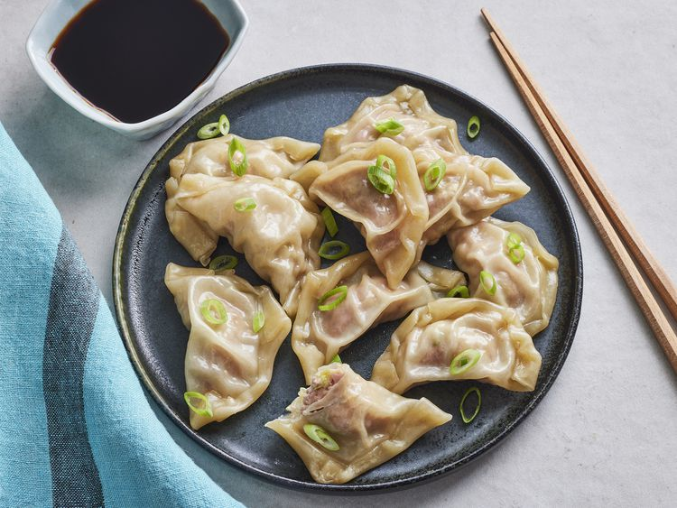

Dumplings

Description
Dumplings are a broad category of food, encompassing virtually every dish that features a filling wrapped in dough. Cultures all over the world have their own version of dumplings.
These are Nepali curry dumplings filled with ground meat of choice and eaten with dipping of choice.
Ingredients
- salt and black pepper to taste
- 2 tablespoons olive oil
- 1 clove garlic, chopped
- 1 onion, sliced
- 1 tomato, diced
- 1 tablespoon chopped fresh cilantro
- 1 pinch cayenne pepper, or to taste
- 1 pinch cayenne pepper, or to taste
- 1 tablespoon chopped fresh cilantro
- 1 pound ground meat of choice
- 1 bunch cilantro, chopped
- 1 onion, chopped
- 1 bunch green onions, chopped
- 1 tablespoon garam masala
- 1 teaspoon curry powder
- 2 cloves garlic, chopped
- 1 teaspoon ginger paste
- salt and black pepper to taste
- 2 (10 ounce) packages round dumpling wrappers
Steps
- To make the dipping sauce, heat the olive oil in a skillet over medium heat. Stir in 1 clove of garlic and the chopped onion; cook and stir until the onion has softened and turned translucent, about 5 minutes. Stir in the tomato, salt, pepper, and cayenne pepper. Cover and reduce heat to low and continue cooking for 15 minutes. Remove from heat and stir in 1 tablespoon cilantro. Pour sauce into a blender and carefully blend until smooth. Cover and refrigerate until ready to use.
- Combine the ground pork, 1 bunch of cilantro, chopped onion, green onions, garam masala, curry powder, 2 cloves of garlic, ginger paste, salt, and pepper in a large bowl. Place a heaping teaspoon of the pork mixture in the center of a dumpling wrapper. Moisten the edge of the wrapper with a few drops of water. Fold the dumpling in half into a half moon shape. Repeat with the remaining dumplings.
- Place a steamer insert into a saucepan, and fill with water to just below the bottom of the steamer. Cover, and bring the water to a boil over high heat. Add the dumplings, recover, and steam until cooked through, about 15 minutes. Serve with the dipping sauce.
Home